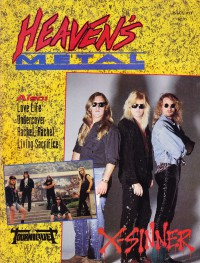

Heaven's Metal, Sep / Oct 1991, #31
| Cover |
|---|
|  |
| Writers in this Issue |
| Bach, David Beeman, Bob Crabb II, Kemper B. Knight, Joey Lott, Jeff Scheetz, Jeff Schmutzer, Steve Shubin, Sharon David Van Pelt, Doug Wagers, Stephen |
X-Sinner
Cover Feature:- "Makin' Peace Treaties and Noise Pollution" by Doug Van Pelt
- "Entering The Psycho Surgery Ward" by Doug Van Pelt
- "Tell Us About Your Love Life" by Doug Van Pelt
- "The Balance of Rock and Truth" by Doug Van Pelt
- "Rachel Rachel's Way To The Heart" by Sharon David Shubin
- "Living Sacrifice Is Dead on Target" by Steve Schmutzer
- Decision-D
- Galactic Cowboys
- Jet Circus
- various artists - Hot Metal 4: The Video by Jeff Lott
- Galactic Cowboys - Galactic Cowboys by Doug Van Pelt
- Tourniquet - Psycho Surgery by Stephen Wagers
- Whitecross - In the Kingdom by Joey Knight
- Bride - Kinetic Faith by Joey Knight
- The Crucified - The Pillars of Humanity by Stephen Wagers
- Living Sacrifice - Living Sacrifice by Jeff Lott
- Angelica - Rock, Stock & Barrel by Jeff Lott
- Xalt - History by Joey Knight
- Dreamer - Full Metal Racket by Jeff Lott
- Mortification - Mortification by Doug Van Pelt
- Crashdog - Humane Society by Stephen Wagers
- Fluffy - Fluffy Loves You by Stephen Wagers
- Sanctuary Church - Sanctuary Praise by Doug Van Pelt
- Darrell Mansfield, Eric Turner - Blues With A Feelin' by Doug Van Pelt
- Mad at the World - Boomerang by Doug Van Pelt
- L.S. Underground - This Is The Healing by Doug Van Pelt
- Knightriot - Beware The Knight by Jeff Lott
- Hot Pink Turtle - demo by Joey Knight
- Larry Perry - demo by Doug Van Pelt
- Andy Lyon - Lyon's Share by Doug Van Pelt
- Weeping Prophet - 4-track demo by Doug Van Pelt
- Theocracy (TX) - demo by Doug Van Pelt
- Tom Jackson - Seminar For Performing Artists by Doug Van Pelt
- David's Secret - Too Good For Words by Doug Van Pelt
- The Walk - Indianland by Doug Van Pelt
- Black and White World - Black And White World by Doug Van Pelt
- Liaison - Urgency by Doug Van Pelt
- Cindy Cruse-Ratcliff - Small Town Girl by Doug Van Pelt
- The Walter Eugenes - The Walter Eugenes by Doug Van Pelt
- David Mullen - Faded Blues by Doug Van Pelt
- Matthew Ward - Fortress by Doug Van Pelt
- Jag - The Only World In Town by Joey Knight
- The Reign - Back From Euphoria by Doug Van Pelt
- "Country Club, L.A." by Sharon David Shubin
- "Austin, TX" by Doug Van Pelt
- "Los Angeles" by Sharon David Shubin
- "Austin, TX (Acoustic Set)" by Doug Van Pelt
- "Austin, TX" by Doug Van Pelt
- Cornerstone '91 by Doug Van Pelt
Pastor Bob by Pastor Bob
Inside / Outside by David Bach
Poster:
- X-Sinner (Greg Bishop)
HM Back Page: "God"
Relevant Links
For more information about HM visit .You may be able to find HM in a library near you: Worldcat

© 2011 CMnexus. Last updated September 2019. Contact: editor -AT- cmnexus -DØT- org About